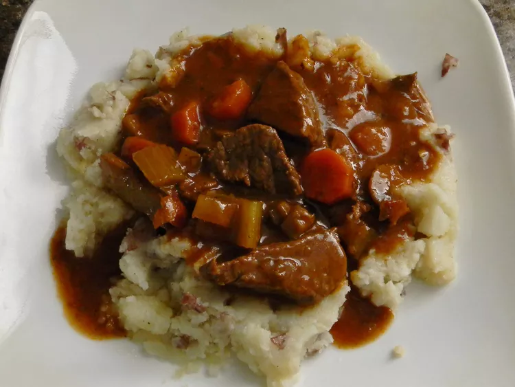

Beef and Guinness Stew

This hearty Guinness beef stew recipe is perfect for cozy days at home.
This Guinness beef stew is a very simple dish, but at the same time, it has a deep, complex, rich flavor. The maltiness of dark beer really does amazing things for the gravy. I served this in a nice ring of green onion-mashed potatoes. I hope you give this a try, whether for Saint Patrick's Day or any time of the year.
Ingredients:
- This Guinness stew starts with bacon. You'll use the bacon and the bacon fat to cook the beef.
- Cut your boneless beef chuck into 2-inch pieces.
- This chunky Guinness stew features onions, carrots, and celery.
- Tomato paste adds richness and flavor depth.
Steps:
- Cook the bacon. Transfer the bacon to a stew pot, but leave the fat in the skillet.
- Cook the beef cubes in the fat. Place the browned beef in the stew pot.
- Cook the onions and garlic in the fat. Pour the beer in and stir.
- Simmer until the meat is tender, then bring to a boil.
- Serve in bowls or over mashed potatoes.